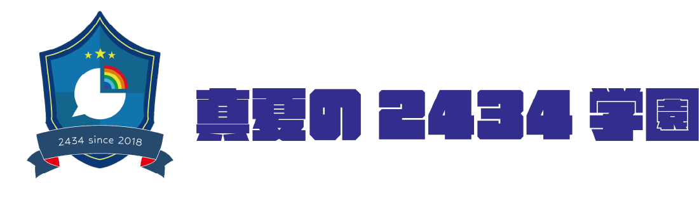
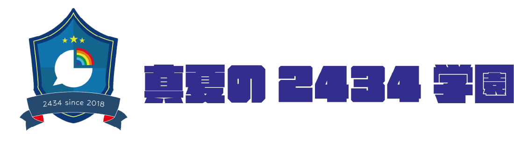
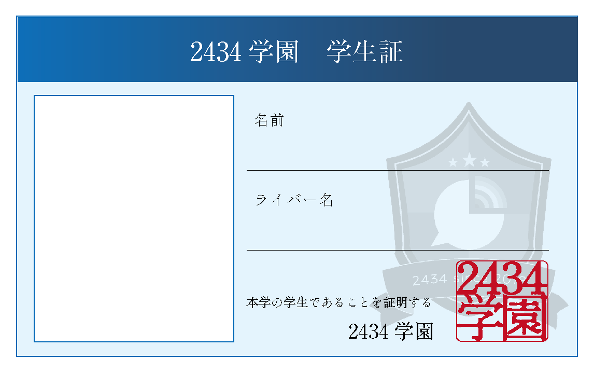
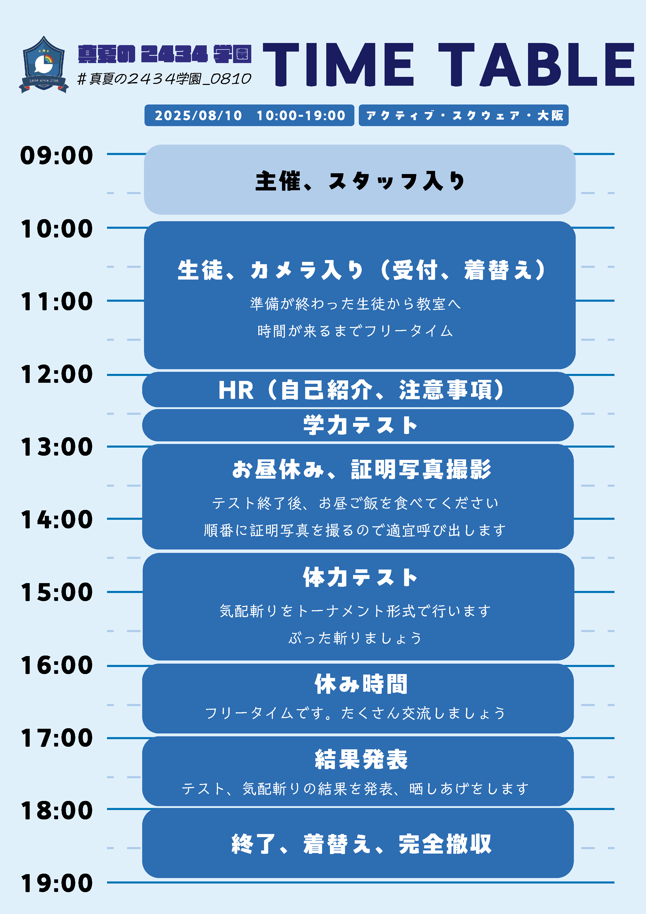

当イベントは非公式イベントです。
ご本人様、「にじさんじ」公式およびANYCOLOR株式会社とは無関係ですので、お問い合わせ等はご遠慮ください。
開催日時
- 2025.8.10
- 10:00〜19:00
開催場所
アクティブ・スクウェア・大東
大阪市大東府野3-28-3-4F
参加表明
"#真夏の2434学園_0810" のタグをつけて是非ツイートしてください♪
当日スケジュール
主催
参加生徒
- 樋口楓┊︎橘 @msrubatsu_123
- 静凛┊︎うにまる @un1maru01
- 剣持刀也┊︎あんな @nyan_cos03
- 伏見ガク┊︎ゆつな @yutu_nada
- 家長むぎ┊︎にげら @K2gella
- 夕陽リリ┊︎Mon @_mo_th1
- 赤羽葉子┊︎はゆ @hayupi_chan
- 叶┊︎秋夜 @sirasu117
- 本間ひまわり┊︎すん @sun1025sun
- 笹木咲 ┊︎星月ゆのゆ @o0_hoshizuki_0o
- 葛葉┊︎奉賀 @ho_ga26
- 椎名唯華┊︎きぃる @kiliru_cos_0227
- 魔界ノりりむ┊︎みお @mionya_3
- エクス・アルビオ┊︎音乃ゆうき @yukinoalma122
- 卯月コウ┊︎しん @Snrwv_105710
- 三枝明那┊︎長月雪 @snow_20031
- 夢追翔┊︎イヴ汰 @IVE__2424
- 緑仙┊︎にゃる @nyaru_chanpi
- 星川サラ┊︎いと @i____i_____cos
- 不破湊┊︎彩 @niji_a_y_a
- 甲斐田晴┊︎あしゅらん @arutaria__
- 長尾景┊︎そうや @souya_2004
- 弦月藤士郎┊︎甘瀬 @amase_milk
- ローレン・イロアス┊︎晃ちゃん。 @_0505_hj
- レイン・パターソン┊︎八桜 @s_yazakura
- オリバー・エバンス┊︎るま @lum__alc
- 風楽奏斗┊︎ちーず @chi_zu_cos
- 渡会雲雀┊︎SIKI @si_ki73
- 四季凪アキラ┊︎入江めい @irie__cosplay
- セラフ・ダズルガーデン┊︎らま @1007_cos
イラスト担当
カメラ
スタッフ
- かわこ
- しゅがあ
- そら
- アルゴン
- ミサキ
- 綾瀬あき
注意事項/校則
1. 申告無しの遅刻・欠席はしないこと
2. 時間を守ること
3. テスト勉強をしておくこと
4.登下校の際、交通ルールに従って気をつけること
5.忘れ物をしないこと
6. 先生、学級委員の話や指示をよく聞くこと
7. 分からないことがあれば先生、学級委員のに聞くこと
8. グループ内外問わず仲良くすること
9. 生徒間での金銭の貸し借りを行わないこと
10. 前日の修羅場はなるべく避けること
11. 推しへの愛を忘れないこと
12. めいっぱい楽しむこと！！！！！！！！